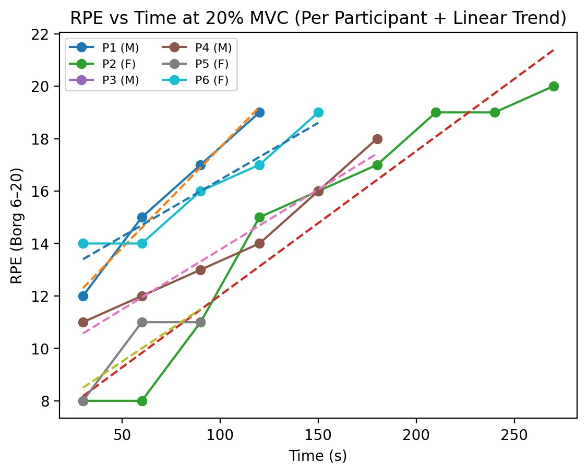
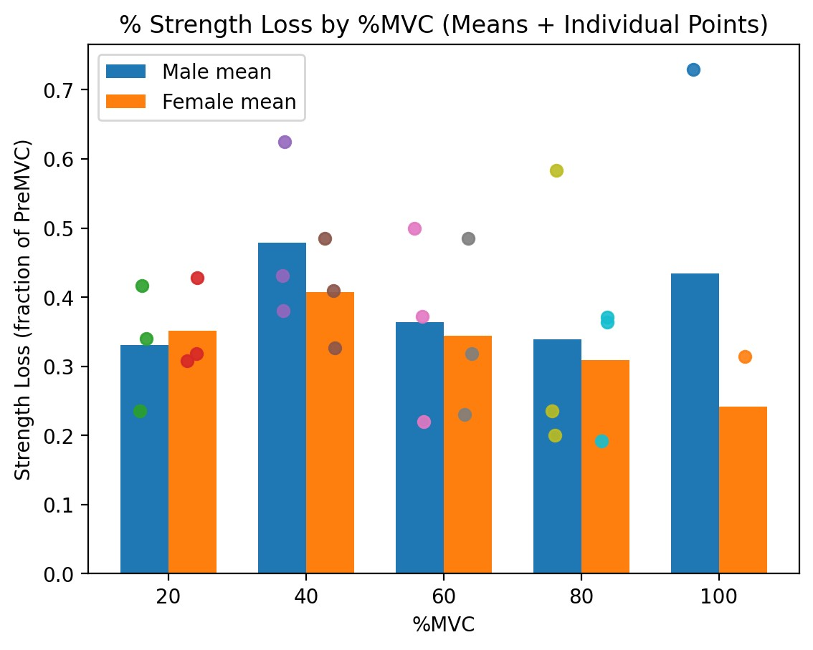

Lab 2 · Force & EMG · Spring 2026
Handgrip Endurance, Strength Loss, and EMG Fatigue
Six volunteers held a handgrip dynamometer at 20%, 40%, 60%, 80%, and 100% of their maximum until they couldn't anymore. Borg RPE and EMG turned the experience into numbers.
Case-study snapshot
- Context: ISyE 552 Lab 2 endurance and fatigue study using progressive %MVC handgrip holds.
- Problem: Grip-intensive tasks can create rapid localized fatigue, but subjective effort alone may not be enough to characterize risk.
- Methods: Endurance trials at 20/40/60/80/100% MVC, post-trial strength-loss calculation, 30-second Borg RPE sampling, and EMG RMS/MPF analysis.
- Outcome: Endurance time decreased as %MVC increased, strength loss remained meaningful across levels, and EMG trends aligned with perceived effort and fatigue.
- My role: Collected and organized force/endurance data, processed RPE and EMG outputs, interpreted cross-measure trends, and produced ergonomic redesign recommendations.
Purpose
Handgrip tasks are a clean way to study localized muscle fatigue because the force level can be set as a percentage of each person's own maximum (MVC). At higher force levels, endurance drops fast and the body shifts strategies to keep going. The lab measured that drop quantitatively — both how it feels (Borg RPE), how it performs (endurance time, post-trial MVC), and how it looks physiologically (EMG amplitude and frequency content). Subjective effort alone is not enough, so multiple data sources triangulate the actual fatigue signal.
Methods
Six volunteers (three male, three female) completed handgrip endurance trials using a dynamometer and stopwatch. After a brief warm-up, each participant performed three MVC trials with two minutes rest between each; the maximum value was used as the pre-MVC. Target forces were set to 20%, 40%, 60%, 80%, and 100% of pre-MVC. Trial order was randomized per participant, and participants rested ten minutes between endurance trials.
For each trial, participants matched the target force until volitional exhaustion and endurance time (ET) was recorded. Immediately after exhaustion, participants performed one post-MVC, and percent strength loss was calculated as (pre-MVC − post-MVC) × 100 / pre-MVC. RPE on the Borg 6–20 scale was collected every 30 seconds during the hold.
For one participant (P1), EMG was collected from the flexor carpi radialis and extensor carpi radialis using a Noraxon Ultium EMG system, with a 10-second resting baseline. EMG was processed in 10-second windows to compute root-mean-square (RMS) and median power frequency (MPF). For RPE–EMG comparisons, EMG values were resampled to 30-second bins.
Results
Mean endurance time by %MVC
| %MVC | Male mean ET (s) | Female mean ET (s) | Rohmert curve ET (s) |
|---|---|---|---|
| 20% | 112.67 | 175.33 | 385.93 |
| 40% | 47.67 | 56.44 | 96.99 |
| 60% | 21.67 | 18.99 | 45.34 |
| 80% | 5.00 | 13.32 | 21.36 |
| 100% | 0.00 | 3.33 | 7.01 |
Mean percent strength loss by %MVC
| %MVC | Male mean strength loss | Female mean strength loss |
|---|---|---|
| 20% | 33.1% | 35.1% |
| 40% | 47.9% | 40.7% |
| 60% | 36.4% | 34.4% |
| 80% | 33.9% | 30.9% |
| 100% | 43.4% | 24.2% |
RPE growth during sustained 20% MVC holds
- 3.67RPE units / minute (male)
- 2.97RPE units / minute (female)


EMG fatigue signature for P1 (extensor)
| Condition | RMS slope (per s, 10 s windows) | MPF slope (Hz / s) |
|---|---|---|
| 20% MVC | +0.118 | −0.386 |
| 40% MVC | +0.989 | −1.652 |
RPE ↔ EMG correlations (P1, 20% MVC, EMG resampled to 30 s)
- r = +0.994RPE vs. extensor EMG RMS
- r = −0.982RPE vs. extensor EMG MPF
What I found
Endurance dropped sharply as force demand rose. The steep decline between 20% and 60% MVC matched what we saw during data collection — even small increases in required force made the hold feel much less steady and much more time-limited. At 100% MVC, several trials were recorded as 0 s, so 100% is best treated as an immediate failure/transition point rather than a smooth continuation of the endurance curve.
Our class endurance times were generally lower than Rohmert's idealized curve, especially at 20–40% MVC. Rohmert's reference is built from controlled conditions; our trials included normal variation in force matching, grip technique, dynamometer fit, and how strictly each person treated the "can't maintain it anymore" endpoint.
Variability was visible in the individual data. Differences in hand size, forearm posture, and unintended recruitment of shoulder/upper arm shifted the load between muscle groups. Motivation and pain tolerance also shaped the endpoint.
RPE captured within-trial change well. A linear fit at 20% MVC gave roughly 3.67 RPE units per minute for males and 2.97 units per minute for females. RPE is fast to collect and surprisingly informative — but it's still subjective.
EMG showed the textbook fatigue signature. RMS rose over time and MPF declined for P1 — increased recruitment plus a shift of the power spectrum toward lower frequencies. The change was steeper at 40% MVC than at 20% MVC, which is the expected dose-response.
RPE and EMG agreed strongly when both were available. At 20% MVC for P1, RPE and extensor RMS correlated at r = +0.994; RPE and extensor MPF correlated at r = −0.982. Subjective effort and physiological fatigue moved together — which is the kind of cross-method agreement that makes a finding load-bearing.
Design recommendations
- Reduce required grip force on sustained tasks
- Better handle shape, friction-grip surfaces, or power-assist tools that lower the percent of MVC required to hold a tool.
- Expected impact: longer effective endurance per cycle; lower repetitive-strain injury risk.
- Build in micro-breaks for tasks above ~30% MVC
- Endurance falls sharply once force demand crosses roughly the 30% MVC range. Short, frequent rests beat long, infrequent ones.
- Expected impact: slower onset of localized fatigue across a shift; fewer compensatory awkward postures.
- Use Borg RPE for routine workplace monitoring
- RPE tracks fatigue cheaply and meaningfully. Reserve EMG for targeted evaluations or redesign studies; reserve dynamometry for higher-risk jobs and pre/post shift screening.
- Expected impact: earlier detection of cumulative fatigue without a sensor budget for every workstation.
- Rotate tasks and reduce repetition
- Distribute high-force gripping across muscle groups and across the shift.
- Expected impact: reduced localized fatigue accumulation; better sustained performance late in shift.
Reflection
Each measure has a different blind spot. Endurance time is intuitive but heavily motivation-dependent. Strength loss is more objective but timing-sensitive — small delays in the post-MVC change the number even if underlying fatigue is similar. RPE is low-cost and informative but still subjective and scale-interpretation differs across people. EMG provides physiological detail but needs careful electrode placement, low-noise recording, and thoughtful processing.
The most defensible conclusion in this lab came from the place where all four measures agreed: as %MVC rose, ET fell, strength loss climbed, RPE rose monotonically, EMG RMS rose, and EMG MPF fell. From an occupational perspective the implication is straightforward — sustained high-force gripping is risky precisely because endurance collapses quickly, and workers compensate with awkward postures or higher co-contraction once they're past the comfortable range.
Full Lab Report
The complete lab report is embedded below from the original .docx file. Use the viewer controls to scroll, zoom, or open full screen.